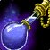

پیشنمایش پاداشهای Talebound در پچ 12.1.7 منتشر شد
بلیزارد در آستانه عرضه پچ 12.1.7 در تاریخ ۱ دسامبر، فهرست کامل پاداشهای حالت Talebound شامل ستهای ترنسموگ، ماونتها، پتها و جوایز متصل به اچیوومنتها را به نمایش گذاشت.

با انتشار پستی رسمی، جزییات پاداشهای حالت جدید Talebound در پچ 12.1.7 مشخص شد. این پاداشها که در تاریخ ۱ دسامبر در دسترس قرار میگیرند، شامل آیتمهای ظاهری، اسباببازیها، مرکبها، تجهیزات، کرستها و حتی معجونهای افزایش XP برای شخصیتهای فرعی هستند.
ارزهای Bound Silver و Ducats
در جریان پیشروی در Talebound، بازیکنان با تکمیل کوئستها، اچیوومنتها و مراحل مختلف Tales of the Storyteller ارزی به نام Bound Silver به دست میآورند که به Warband متصل است. علاوه بر این، ارز دیگری با نام Ducats جمعآوری میشود که برای تبدیل به منابع ارتقا و پیشرفت در این حالت یا تبدیل به Bound Silver کاربرد دارد. پس از پایان هر قصه، میتوان به Quillgrave بازگشت و Ducats را با مراجعه به Nib یا از طریق منوی بازی و صفحه انتخاب کاراکتر خرج کرد.
ترنسموگها و ستهای پوششی
طیف گستردهای از آیتمهای ظاهری و سلاحها با ارز Bound Silver قابل خریداری هستند که قیمتهای مختلفی دارند:
- ستهای گرانقیمت ۴۰۰۰ نقرهای نظیر Ensemble: Witch Hunter’s Shadow Attire، Ensemble: Witch Hunter’s Ivory Attire و Ensemble: Witch Hunter’s Forest Attire
- ستهای ۳۰۰۰ واحدی شامل Ensemble: Wood Haunter’s Guise of the Wight و Ensemble: Faith-Cursed Vestments
- آیتمهای ۲۵۰۰ نقرهای مثل Ensemble: Village Patrolman's Regalia، Ensemble: Expedition’s Saltstained Finery و Ensemble: Forest Dweller’s Muddied Attire
- ستها و آیتمهای ۲۰۰۰ واحدی مانند Traveler’s Colorful Mantle Collection و Ensemble: Cursed Wood-Haunt's Mask Gallery
- تجهیزات ۱۵۰۰ نقرهای از جمله Alchemist’s Research Kit، Witch Scribe’s Haunted Scroll و Ensemble: Ornaments of the Night Court Butterfly
- انواع ستها و پوستههای سلاح به قیمت ۱۰۰۰ نقره نظیر Ensemble: Traveler’s Charcoal Commonwear، Ensemble: Drustvar Smuggler’s Attire، Slayer’s Monster Blaster، Mad Raven-Witch Mask و Wings of the Fae Courier
- قطعات سر و سلاحهای ۷۰۰ واحدی مانند Ensemble: Traveler’s Shadow Headgear، Lost Ritualist’s Curved Edge و Abandoned Veteran’s Bootknife
- شنلهای شانهای به قیمت ۶۰۰ نقره نظیر Prowler’s Lively Shoulder Cape و Prowler’s Plum Shoulder Cape
مرکبها، وسایل خانه و پتها
علاقهمندان به جمعآوری ماونت، پت و وسایل مسکن نیز گزینههای متعددی پیش رو دارند:
- ماونت ۴۰۰۰ واحدی Lost Mare of the Maddening Faire و گزینههای ۳۰۰۰ واحدی مثل Enchanted Woodland Wanderer و Shadowpaw Wood Watcher در کنار مرکبهای ۲۰۰۰ نقرهای چون Shadowbound Storybook و Ambermill Traveler’s Rouncey
- دکوراسیونهای مسکن با هزینههای ۵۰۰ تا ۱۰۰۰ نقره مانند Quillgrave Talebound Shadowtome به ارزش ۱۰۰۰، Quillgrave Storyteller’s Lectern به ارزش ۸۰۰، Storyteller’s Looking Glass به ارزش ۵۰۰ و قطعات معماری ۲۰۰ و ۳۰۰ نقرهای شامل Tidesage’s Left Copper Mascaron با قیمت ۲۰۰ و Tidesage’s Right Copper Mascaron با قیمت ۳۰۰
- پتهای ۲۰۰۰ نقرهای شامل Bewitching Familiar، Hex-Cursed Manifestation، Inquisitor’s Messenger و Slayer’s Faithful Tracker
پاداشهای متصل به اچیوومنت و کلاغ نقرهای
بخشی از جوایز خارج از منطقه Quillgrave و از طریق کلاغی در Silvermoon City به نام Traveling Raven اهدا میشود. تعامل با این پرنده اچیومنت Tapping at the Trader’s Door را ثبت میکند. از جمله این جوایز میتوان به صندوقهای تجهیزات سطوح Champion، Heroic و Mythic اشاره کرد.
معجونهای هوش 
تکمیل اهداف نهایی با هر سه کلاس درجات دشواری مختلف، بستههای حاوی کرستها و آیتمهای تزئینی مانند اسباببازی  Wood-Cursed Hearthstone Toy و القابی نظیر Listener، Monster Hunter و of the Sacred Flame را به همراه خواهد داشت.
Wood-Cursed Hearthstone Toy و القابی نظیر Listener، Monster Hunter و of the Sacred Flame را به همراه خواهد داشت.